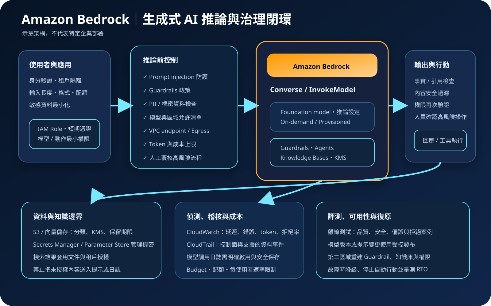

Amazon Bedrock：基礎模型推論、治理與生成式 AI 安全
Amazon Bedrock 是用來存取與整合基礎模型的全受管服務，提供統一 API，以及 Guardrails、Knowledge Bases、Agents、模型評測與客製化等能力。AWS 管理服務基礎設施，但不會代替資料授權、提示與輸出治理、應用權限、事實驗證、成本限制或業務決策責任。
作者：Dr. William｜查閱與發布：2026-10-06
服務定位
Amazon Bedrock 讓應用程式透過受管 API 使用 AWS 與第三方供應商提供的基礎模型，支援文字、影像或其他模型能力，實際可用模型、功能、區域與配額須依官方服務頁及主控台確認。應用可使用 InvokeModel，或以 Converse API 及 ConverseStream 建立較一致的多輪對話整合。
Bedrock 不是自動正確的知識庫、決策引擎或授權系統。模型輸出可能不完整、過時、偏誤、虛構或受惡意提示影響；Guardrails 也不是所有風險的唯一防線。凡涉及付款、權限變更、醫療、法律、資安封鎖或其他高影響行動，仍須使用確定性規則、權限檢查、可追溯證據與適當人工覆核。
核心概念與服務邊界
模型、推論與擴充能力
- Foundation model：依文字理解、生成、影像、嵌入向量、延遲、上下文長度、語言、授權與成本選型；不同模型不保證具備相同參數或行為。
- Inference：On-demand 適合依請求使用；Provisioned Throughput 適合需要保留吞吐或特定客製模型的情境。實際支援方式依模型而異。
- Converse API：以較一致的訊息結構建立支援模型的對話應用，仍須處理模型差異、工具定義、逾時、節流與輸出驗證。
- Knowledge Bases：從授權資料來源擷取相關內容，形成 retrieval-augmented generation；檢索相關不代表內容正確或使用者有權讀取。
- Agents：協調模型、知識來源與 action groups 執行多步驟任務；工具的真實權限、輸入驗證與副作用控制仍由客戶負責。
- Model evaluation：以自動或人工方法比較品質、責任 AI 與任務適配度；評測資料應涵蓋正常、邊界、惡意與拒絕案例。
安全與治理元件
- Guardrails：可配置拒絕主題、內容篩選、敏感資訊過濾、字詞規則、grounding 或相關檢查；必須依實際語言與攻擊案例測試。
- IAM：分開模型調用、Guardrail、Agent、Knowledge Base、客製化與管理權限，並限制可使用的模型、資源與條件。
- PrivateLink：可用介面型 VPC endpoint 讓 VPC 內工作負載存取支援的 Bedrock 端點；endpoint policy、security group、DNS 與 IAM 需共同限制。
- KMS：依功能使用 AWS 擁有或客戶管理金鑰保護支援的資料；金鑰政策、停用、輪替與跨區策略仍須管理。
- CloudTrail：記錄支援的 Bedrock API 活動；是否包含特定資料事件與內容須依事件類型及 trail 設定確認。
- Model invocation logging：可選擇記錄模型調用資料到 CloudWatch Logs 或 S3，但預設不應假設已啟用；提示與回應可能含敏感資料，需先設計遮罩、加密、存取及保留期限。
適合與不適合的使用情境
適合
- 企業需要用統一的 AWS 控制面整合多種基礎模型，並以 IAM、KMS、CloudTrail、CloudWatch 與 VPC endpoint 納入既有治理。
- 客服、文件摘要、內容草稿、搜尋問答或開發輔助等流程，允許模型提供建議，且有輸入輸出檢查與人工確認。
- 需要以企業文件建立 RAG，且團隊能對文件分類、資料來源、租戶授權、索引更新、引用與刪除流程負責。
- 需要透過 Agent 呼叫企業 API，但能將工具權限限制在最小範圍，並對高風險副作用設置明確核准。
- 需要比較模型品質、延遲、成本與安全表現，並能持續執行回歸評測。
不適合或不能單獨完成
- 要求所有輸出必然正確、可直接作為法律、醫療、財務或安全決策，而沒有外部證據與專業覆核。
- 資料來源沒有明確授權、保留與刪除規則，卻計畫直接匯入知識庫或提示。
- 希望用 Guardrails 取代身分驗證、IAM、租戶隔離、資料授權、輸出編碼或應用程式安全測試。
- 讓 Agent 使用廣泛管理權限執行不可逆操作，且缺乏交易上限、冪等、防重放、人工確認與停止開關。
- 工作負載具有極低且確定的延遲、完全可重現或離線執行要求，但沒有評估模型推論特性與替代架構。
示意故事案例：內部維運知識助理
以下為示意案例，不代表特定企業或正式部署。 一家軟體公司希望讓值班工程師查詢已核准的維運手冊與過往事件摘要。員工先透過企業身分提供者登入；應用後端在私有 subnet 執行，使用工作負載 IAM role 與短期憑證呼叫 Bedrock，不保存長期 Access Key。每次請求都附帶租戶、部門與文件分類資訊，但不把授權判斷交給模型。
文件先進入受控 S3 bucket，使用 KMS 加密，經惡意內容掃描、擁有者核准、敏感資料分類與保留期限檢查後才同步到 Knowledge Base。檢索服務依員工群組過濾允許文件；應用對提示執行長度、格式、PII 與 prompt injection 檢查，再套用 Guardrail。模型回答必須附帶檢索來源，介面清楚標示為輔助資訊。若回答要觸發重啟服務、修改防火牆或變更帳號，系統不直接執行，而是建立待審核變更單，由人員確認目標、風險與回復步驟。

建置與運作流程
- 定義任務與風險：記錄使用者、資料分類、輸出用途、可接受錯誤、禁止內容、人工覆核點、RTO、RPO 與停止條件。
- 選擇模型與區域：以任務資料測試品質、語言、延遲、上下文、配額、價格、區域與資料治理，不只比較公開基準。
- 建立身分邊界：人員使用聯合登入與 MFA；應用使用 IAM role 與短期憑證。分開開發、測試與正式帳戶或權限邊界。
- 限制模型存取：只允許必要的 InvokeModel、Converse、Guardrail、Knowledge Base 或 Agent 動作與資源；以 SCP、permission boundary 或條件限制未核准模型與區域。
- 設計網路路徑：依資料敏感度評估 VPC endpoint、security group、endpoint policy、DNS 與 egress allowlist；不得把建立 endpoint 當成完整隔離。
- 治理資料來源：文件先分類、去除不必要個資、確認授權、惡意內容掃描、加密與設定保留期限；索引與原始資料都要有刪除及撤權流程。
- 建立提示防護：分隔系統指令、使用者輸入與檢索內容，限制長度與格式，對注入、資料外洩、越權及編碼繞過建立測試。
- 設定 Guardrail：依業務風險配置內容、主題、敏感資訊與 grounding 控制；記錄版本，測試誤擋、漏擋與多語言表現。
- 限制工具副作用：Agent action group 使用獨立最小權限角色；所有工具重新驗證身分、參數與租戶，高風險動作要求明確確認。
- 驗證輸出：要求結構化格式時使用 schema 驗證；顯示資料前做輸出編碼；事實、引用與權限由外部系統驗證。
- 建立可觀測性：監控延遲、錯誤、節流、token、Guardrail 攔截、檢索命中、工具失敗、成本與品質漂移；敏感提示不得無限制寫入日誌。
- 執行持續評測：保存去識別化測試集，涵蓋正常、邊界、惡意、拒絕、跨語言與工具濫用案例；模型、提示或 Guardrail 變更前跑回歸。
- 設計失敗與復原：設定逾時、有限重試、backoff、jitter、併發上限、circuit breaker 與安全降級；第二區域須重建模型存取、Guardrail、知識資料、金鑰與權限。
成本、可用性與維運考量
Bedrock 費用依模型與功能而異，常見計費單位包含輸入與輸出 token、影像或其他模型單位、Provisioned Throughput、模型客製化、Guardrails、Knowledge Bases、Agents、Model Evaluation 與資料處理。外部相依成本可能包含 S3、向量資料庫、OpenSearch Serverless、Aurora、KMS、CloudWatch Logs、NAT Gateway、PrivateLink、Lambda、資料傳輸與備份。正式估算須以查閱當日官方價格、實際區域、模型、平均輸入輸出長度、尖峰併發、重試率與日誌量重新計算。
降低成本應先縮短不必要的 system prompt、限制檢索片段、快取可重用結果、設定每使用者配額、避免無界 Agent 迴圈並選擇符合任務的模型。便宜模型不一定降低總成本；若錯誤率提高、重試增加或需要更多人工修正，端到端成本可能上升。Budget 與 Cost Anomaly Detection 可作為財務告警，但應用仍須有即時 token、併發、速率與任務步數上限。
模型與 Bedrock 功能具有區域及供應差異，服務配額也可能限制尖峰吞吐。跨區推論可改善支援情境下的可用性與吞吐路由，但不代表所有資料、Guardrail、Knowledge Base、Agent、KMS key、VPC endpoint 或外部工具自動跨區複製。復原設計須確認資料落點、法規、相依服務、模型 ID、提示與 Guardrail 版本、索引一致性，以及故障期間是否停止高風險自動行動。
Amazon Bedrock 特有資安風險與控制
- Prompt injection：把使用者輸入、網頁、文件與工具回傳視為不可信資料；分隔指令與內容，限制可執行工具，並以惡意測試集持續驗證。
- 間接提示注入污染知識庫：文件進入索引前完成來源驗證、惡意內容掃描、擁有者核准與版本追蹤；檢索文字不能覆寫系統政策。
- 跨租戶資料外洩：授權過濾必須在檢索與工具層執行，不依賴模型理解租戶；每筆文件保存可驗證 ACL，撤權後同步移除索引。
- 敏感資料送入模型：在輸入前分類、遮罩與最小化資料，使用 Guardrail 敏感資訊過濾作補充；提示、回應、trace 與日誌都納入資料治理。
- 模型幻覺與錯誤引用：要求可追溯來源，對關鍵數值與規則查詢權威系統；無足夠證據時回覆不知道，不讓流暢文字取代驗證。
- Guardrail 誤用：Guardrail 不能取代 IAM、WAF、輸入驗證、租戶隔離或人工覆核；每次版本變更都測試漏擋、誤擋與語言繞過。
- 過寬模型權限：限制 bedrock:InvokeModel 等動作、模型 ARN、Guardrail、Agent、Knowledge Base 與區域；管理權限與執行權限分離。
- Agent 工具越權：工具服務不信任模型提供的身分或參數，重新檢查呼叫者、租戶、交易限額與資源狀態；不可逆操作需人員確認。
- 無界 Agent 迴圈：限制最大步數、工具次數、token、時間與金額，使用冪等鍵、circuit breaker 與人工停止開關。
- 模型或提示供應鏈漂移：釘選可控版本，保存提示、Guardrail、工具 schema 與評測結果；升級前使用 shadow 或小流量發布。
- 調用日誌外洩：Model invocation logging 僅在有明確用途時啟用，目的地使用 KMS、最小權限、遮罩、短保留與存取告警。
- 私有連線錯誤認知：VPC endpoint 不會自動封鎖所有公網路徑；應同時限制 endpoint policy、IAM、security group、DNS 與工作負載 egress。
- KMS 金鑰治理不足：限制 key policy 與 grant，監控停用及刪除排程，並確認第二區域或跨區資料的金鑰可用性。
- 資源耗盡與帳單攻擊：對匿名或低信任使用者實施驗證、WAF、速率限制、token 上限、併發上限、預算及異常告警。
- CloudTrail 認知錯誤：CloudTrail 主要提供 API 稽核，不等於完整提示、回應、品質與業務決策證據；需要時另建受控應用稽核紀錄。
- 區域故障後不安全降級：切換失敗時停止高風險工具與自動行動，避免改用未核准模型、公開端點或缺少 Guardrail 的備援路徑。
共同責任邊界
AWS 負責 Bedrock 受管服務與底層雲端基礎設施安全、服務端維護及其責任範圍內的可用性。基礎模型供應商負責其模型開發與文件所述範圍，但模型能力與限制仍須由使用者依實際任務評估。客戶負責資料合法性與授權、模型選擇、IAM、網路、KMS、提示、Guardrail、Knowledge Base、Agent 工具、輸出驗證、監控、成本、備份與跨區復原。
客戶須落實 IAM 最小權限、人員 MFA 與工作負載短期憑證、網路隔離與公開存取控制、KMS 加密、Secrets Manager／Parameter Store、CloudTrail／CloudWatch、資料備份及跨區復原。AWS 不會替客戶判斷文件是否可被特定員工存取、回答是否為真、工具操作是否符合業務授權、模型偏誤是否可接受，或第二區域能否在 RTO 內以相同治理標準接手。
上線前可執行檢查清單
- □ 已記錄任務、使用者、資料分類、禁止用途、可接受錯誤、人工覆核點、RTO 與停止條件。
- □ 已用真實但去識別化的任務資料比較模型品質、延遲、語言、安全、區域、配額與成本。
- □ 人員採聯合登入與 MFA；工作負載使用 IAM role 與短期憑證，程式碼、映像、日誌及 URL 無任何機密。
- □ InvokeModel、Converse、Guardrail、Knowledge Base、Agent 與管理權限已分離並限制資源、模型及區域。
- □ VPC endpoint、endpoint policy、security group、DNS、IAM 與 egress 規則已共同測試允許及拒絕路徑。
- □ 資料來源已有擁有者、授權、分類、惡意內容掃描、KMS、保留期限、撤權與刪除程序。
- □ 檢索層會依使用者與租戶執行文件 ACL，不依賴模型自行判斷可見範圍。
- □ Prompt injection、間接注入、編碼繞過、資料外洩、越權與拒絕案例已納入自動測試。
- □ Guardrail 已版本化，並測試內容政策、敏感資訊、grounding、誤擋、漏擋與多語言表現。
- □ Agent 工具使用獨立最小權限角色，所有參數重新驗證，高風險副作用需人員明確確認。
- □ 輸出完成 schema、編碼、引用、事實與權限驗證；介面不把模型答案標示成保證正確。
- □ Secrets Manager／Parameter Store 僅保存必要機密，且已設定輪替、讀取限制與存取告警。
- □ Model invocation logging 僅在明確核准後啟用，日誌已遮罩、KMS 加密、限制存取並設定保留期限。
- □ CloudTrail 已建立持續 trail；CloudWatch 已監控錯誤、延遲、節流、token、Guardrail、工具失敗與異常成本。
- □ 已設定每使用者速率、token、併發、工具步數、逾時、有限重試、circuit breaker 與 Budget 告警。
- □ 模型、提示、Guardrail、工具 schema 與評測結果都有版本；變更前會跑品質及安全回歸。
- □ 第二區域的模型存取、資料、索引、Guardrail、Agent、IAM、KMS、VPC endpoint 與監控已建立或具可重建程序。
- □ 已演練 prompt injection、敏感資料外洩、模型不可用、配額耗盡、Agent 越權、金鑰停用、成本暴增與區域切換。
AWS 官方一手來源
- What is Amazon Bedrock?（查閱：2026-10-06）
- Carry out a conversation with the Converse API operations（查閱：2026-10-06）
- Run inference with Amazon Bedrock（查閱：2026-10-06）
- Detect and filter harmful content by using Amazon Bedrock Guardrails（查閱：2026-10-06）
- Retrieve data and generate AI responses with Amazon Bedrock Knowledge Bases（查閱：2026-10-06）
- Automate tasks in your application using conversational agents（查閱：2026-10-06）
- Evaluate the performance of Amazon Bedrock resources（查閱：2026-10-06）
- Identity and access management for Amazon Bedrock（查閱：2026-10-06）
- Protect your data using Amazon VPC and AWS PrivateLink（查閱：2026-10-06）
- Data protection and encryption in Amazon Bedrock（查閱：2026-10-06）
- Log Amazon Bedrock model invocation activity（查閱：2026-10-06）
- Logging Amazon Bedrock API calls using AWS CloudTrail（查閱：2026-10-06）
- Monitor Amazon Bedrock（查閱：2026-10-06）
- Increase throughput with cross-Region inference（查閱：2026-10-06）
- Quotas for Amazon Bedrock（查閱：2026-10-06）
- Amazon Bedrock pricing（查閱：2026-10-06）
- AWS Well-Architected Machine Learning Lens｜Generative AI lifecycle（查閱：2026-10-06）
- AWS Well-Architected Security Pillar｜Shared responsibility（查閱：2026-10-06）
內容說明
本文依查閱日可用的 AWS 官方文件整理，作為基礎學習與架構討論材料；實際部署仍須依最新模型、區域、配額、Guardrails、資料來源、價格、授權條款、法規、風險評測與復原演練結果調整。